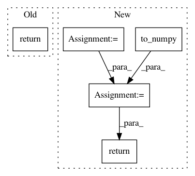

6be1f6d9be00190becf2ea3ee0eee28ab3af8943,tensorly/backend/mxnet_backend.py,,inverse,#Any#,156
Before Change
return tensor.astype("int32")
def inverse(tensor):
return nd.linalg.potri(tensor)
def kr(matrices):
Khatri-Rao product of a list of matrices
After Change
ctx = context(matrix)
matrix = to_numpy(matrix)
inv = numpy_backend.inverse(matrix)
return tensor(inv, **ctx)
def kr(matrices):
Khatri-Rao product of a list of matrices
In pattern: SUPERPATTERN
Frequency: 3
Non-data size: 5
Instances
Project Name: tensorly/tensorly
Commit Name: 6be1f6d9be00190becf2ea3ee0eee28ab3af8943
Time: 2018-09-08
Author: zli@wustl.edu
File Name: tensorly/backend/mxnet_backend.py
Class Name:
Method Name: inverse
Project Name: havakv/pycox
Commit Name: 6671f9d02fc5e90d3d64dfa7bf4f9f9abd0826f1
Time: 2019-02-19
Author: haavard.kvamme@gmail..com
File Name: pycox/models/cox_cc.py
Class Name: CoxTime
Method Name: compute_baseline_hazards
Project Name: tensorly/tensorly
Commit Name: 975c84b15a5bdec14d2b326b985e2ac15bc099b8
Time: 2018-09-19
Author: zli@wustl.edu
File Name: tensorly/backend/mxnet_backend.py
Class Name:
Method Name: inverse